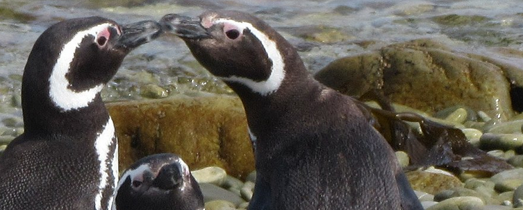

# install.packages("palmerpenguins")
library(palmerpenguins)
df <- palmerpenguins::penguinsIntro
Vamos a utilizar datos del paquete palmerpenguins. El repo del paquete en CRAN está aquí, el repo de Github está aquí y la página web del paquete está aquí.
Los datos se pueden cargar en la memoria de de R/RStudio de esta forma:
El dataset contiene observaciones sobre un conjunto de 344 pingüinos de 3 especies. Hay 8 variables.
Los pingüinos molan
Vamos a ver una foto de un pingüinos

Sí, lo pingüinos molan, así que vamos a poner otra foto de pingüinos que tenemos en nuestro PC pero la vamos a poner en el margen:

Algunos gráficos
Bueno pues vamos a hacer algún gráfico, pero claro antes he de cargar los paquetes
library(tidyverse)Arreglo los datos
#- cojos datos de pingüinos y arreglo un poco
df <- palmerpenguins::penguins %>%
dplyr::select(species, bill_depth_mm, body_mass_g) %>%
tidyr::drop_na()Primer gráfico
#- primer gráfico
p <- ggplot(data = df,
mapping = aes(x = bill_depth_mm, y = body_mass_g, color = species)) +
geom_point()
p
Segundo
#- segundo gráfico
p <- p + geom_smooth(method = "lm", se = FALSE)
p
El último
#- tercer gráfico
p + geom_smooth(method = "lm", se = FALSE, color = "black") Con esto acabo mi trabajo para BigData!!
Abajo muestro mi entorno de trabajo y paquetes utilizados
current session info
─ Session info ───────────────────────────────────────────────────────────────
setting value
version R version 4.2.1 (2022-06-23 ucrt)
os Windows 10 x64 (build 22000)
system x86_64, mingw32
ui RTerm
language (EN)
collate Spanish_Spain.utf8
ctype Spanish_Spain.utf8
tz Europe/Paris
date 2022-11-18
pandoc 2.18 @ C:/Program Files/RStudio/bin/quarto/bin/tools/ (via rmarkdown)
─ Packages ───────────────────────────────────────────────────────────────────
package * version date (UTC) lib source
assertthat 0.2.1 2019-03-21 [1] CRAN (R 4.2.1)
backports 1.4.1 2021-12-13 [1] CRAN (R 4.2.0)
broom 1.0.1 2022-08-29 [1] CRAN (R 4.2.1)
cellranger 1.1.0 2016-07-27 [1] CRAN (R 4.2.1)
cli 3.4.0 2022-09-08 [1] CRAN (R 4.2.1)
clipr 0.8.0 2022-02-22 [1] CRAN (R 4.2.1)
colorspace 2.0-3 2022-02-21 [1] CRAN (R 4.2.1)
crayon 1.5.1 2022-03-26 [1] CRAN (R 4.2.1)
DBI 1.1.3 2022-06-18 [1] CRAN (R 4.2.1)
dbplyr 2.2.1 2022-06-27 [1] CRAN (R 4.2.1)
desc 1.4.2 2022-09-08 [1] CRAN (R 4.2.1)
details 0.3.0 2022-03-27 [1] CRAN (R 4.2.2)
digest 0.6.29 2021-12-01 [1] CRAN (R 4.2.1)
dplyr * 1.0.10 2022-09-01 [1] CRAN (R 4.2.1)
ellipsis 0.3.2 2021-04-29 [1] CRAN (R 4.2.1)
evaluate 0.16 2022-08-09 [1] CRAN (R 4.2.1)
fansi 1.0.3 2022-03-24 [1] CRAN (R 4.2.1)
farver 2.1.1 2022-07-06 [1] CRAN (R 4.2.1)
fastmap 1.1.0 2021-01-25 [1] CRAN (R 4.2.1)
forcats * 0.5.2 2022-08-19 [1] CRAN (R 4.2.1)
fs 1.5.2 2021-12-08 [1] CRAN (R 4.2.1)
gargle 1.2.1 2022-09-08 [1] CRAN (R 4.2.1)
generics 0.1.3 2022-07-05 [1] CRAN (R 4.2.1)
ggplot2 * 3.3.6 2022-05-03 [1] CRAN (R 4.2.1)
glue 1.6.2 2022-02-24 [1] CRAN (R 4.2.1)
googledrive 2.0.0 2021-07-08 [1] CRAN (R 4.2.1)
googlesheets4 1.0.1 2022-08-13 [1] CRAN (R 4.2.1)
gtable 0.3.1 2022-09-01 [1] CRAN (R 4.2.1)
haven 2.5.1 2022-08-22 [1] CRAN (R 4.2.1)
hms 1.1.2 2022-08-19 [1] CRAN (R 4.2.1)
htmltools 0.5.3 2022-07-18 [1] CRAN (R 4.2.1)
htmlwidgets 1.5.4 2021-09-08 [1] CRAN (R 4.2.1)
httr 1.4.4 2022-08-17 [1] CRAN (R 4.2.1)
jsonlite 1.8.0 2022-02-22 [1] CRAN (R 4.2.1)
knitr 1.40 2022-08-24 [1] CRAN (R 4.2.1)
labeling 0.4.2 2020-10-20 [1] CRAN (R 4.2.0)
lattice 0.20-45 2021-09-22 [2] CRAN (R 4.2.1)
lifecycle 1.0.3 2022-10-07 [1] CRAN (R 4.2.2)
lubridate 1.8.0 2021-10-07 [1] CRAN (R 4.2.1)
magrittr 2.0.3 2022-03-30 [1] CRAN (R 4.2.1)
Matrix 1.5-0 2022-09-10 [1] CRAN (R 4.2.1)
mgcv 1.8-40 2022-03-29 [2] CRAN (R 4.2.1)
modelr 0.1.9 2022-08-19 [1] CRAN (R 4.2.1)
munsell 0.5.0 2018-06-12 [1] CRAN (R 4.2.1)
nlme 3.1-157 2022-03-25 [2] CRAN (R 4.2.1)
palmerpenguins * 0.1.1 2022-08-15 [1] CRAN (R 4.2.1)
pillar 1.8.1 2022-08-19 [1] CRAN (R 4.2.1)
pkgconfig 2.0.3 2019-09-22 [1] CRAN (R 4.2.1)
png 0.1-7 2013-12-03 [1] CRAN (R 4.2.0)
purrr * 0.3.4 2020-04-17 [1] CRAN (R 4.2.1)
R6 2.5.1 2021-08-19 [1] CRAN (R 4.2.1)
readr * 2.1.2 2022-01-30 [1] CRAN (R 4.2.1)
readxl 1.4.1 2022-08-17 [1] CRAN (R 4.2.1)
reprex 2.0.2 2022-08-17 [1] CRAN (R 4.2.1)
rlang 1.0.6 2022-09-24 [1] CRAN (R 4.2.2)
rmarkdown 2.16 2022-08-24 [1] CRAN (R 4.2.1)
rprojroot 2.0.3 2022-04-02 [1] CRAN (R 4.2.1)
rstudioapi 0.14 2022-08-22 [1] CRAN (R 4.2.1)
rvest 1.0.3 2022-08-19 [1] CRAN (R 4.2.1)
scales 1.2.1 2022-08-20 [1] CRAN (R 4.2.1)
sessioninfo 1.2.2 2021-12-06 [1] CRAN (R 4.2.1)
stringi 1.7.8 2022-07-11 [1] CRAN (R 4.2.1)
stringr * 1.4.1 2022-08-20 [1] CRAN (R 4.2.1)
tibble * 3.1.8 2022-07-22 [1] CRAN (R 4.2.1)
tidyr * 1.2.1 2022-09-08 [1] CRAN (R 4.2.1)
tidyselect 1.2.0 2022-10-10 [1] CRAN (R 4.2.2)
tidyverse * 1.3.2 2022-07-18 [1] CRAN (R 4.2.1)
tzdb 0.3.0 2022-03-28 [1] CRAN (R 4.2.1)
utf8 1.2.2 2021-07-24 [1] CRAN (R 4.2.1)
vctrs 0.4.1 2022-04-13 [1] CRAN (R 4.2.1)
withr 2.5.0 2022-03-03 [1] CRAN (R 4.2.1)
xfun 0.33 2022-09-12 [1] CRAN (R 4.2.1)
xml2 1.3.3 2021-11-30 [1] CRAN (R 4.2.1)
yaml 2.3.5 2022-02-21 [1] CRAN (R 4.2.1)
[1] C:/Users/VICTOR/AppData/Local/R/win-library/4.2
[2] C:/Program Files/R/R-4.2.1/library
──────────────────────────────────────────────────────────────────────────────